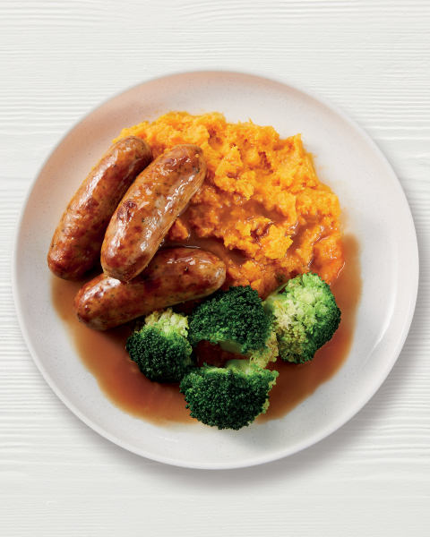

Sausage and Mash

A delicious sweet potato alternative to the pub classic, sausage and mash
The perfect mid-week meal for when you're craving something hearty but healthy.
The sweet potato mash is smooth and sweet and works perfectly with vegetarian sausages.
Ingredients for 2 People
- 1 large sweet potato
- 1/2 head broccoli
- 160g of petit pois
- 6 vegetarian sausages
- 2 tsp english mustard
- 2 tbsp butter
- salt
- ketchup or gravy to serve
Steps
- Boil Water
- Chop potato into medium chunks
- Add potato to boiling water and cook for 15 minutes or until soft
- Fry sausages for 10 minutes
- Add peas and broccoli to seperate pan of boiling water for 6 mins
- Drain potatoes and add back to pan
- Mash the potato with butter and mustand
- Make gravy per instructions on packet gravy, if using.
- Season with salt to taste